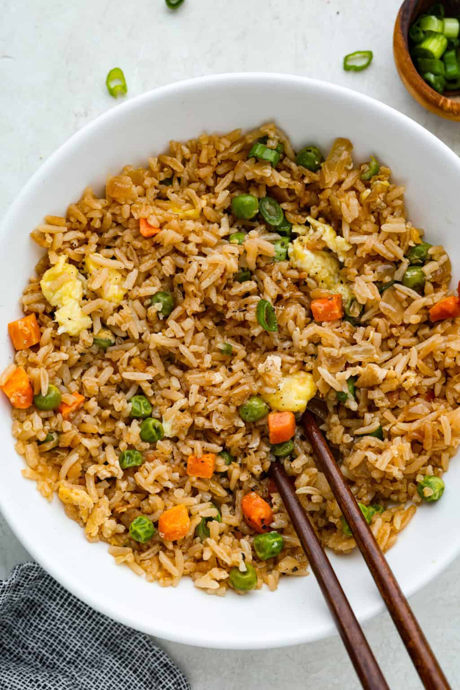

Hawaiian Pizza
Hawaiian Pizza was first made in italy. It is created because someone want to eat pizza with pine apple on it.
The taste is kinda sweet and sour. Which make alot of people don't like it.The Hawaiian Pizza usually contains pineapple cheese tomato and sometime bacon.

Fried Rice
Fried rice is maybe the most easy and delicious dish you can do.
It come down to just throw a rice a vegetable and some meats in the pan and just stir it untill it cooked.

Kimbap
Kimbap is one of the most famous foods from the South Korean.
It a cooked rice that has a filling and rolled in dried seaweed.People usually confuse it with the japaneses sushi but it has more filling with more diverse ingredients and lack of vinegar taste.